Support Vector Machine (SVM)
Finding the widest possible gap between student performance groups — and using the kernel trick to see patterns invisible in flat data.
Overview
A Support Vector Machine (SVM) is a supervised machine learning algorithm that learns to classify data by finding the optimal decision boundary — called a hyperplane — that separates classes with the largest possible margin. Imagine drawing a line between two groups of students on a chart: SVMs do not just draw any line — they find the single best line that keeps the largest possible gap, or "margin," between the two groups. This makes SVMs remarkably resistant to overfitting and highly generalizable to new, unseen data.
The concept of the maximum margin hyperplane is what makes SVMs "linear separators." In 2D space, the decision boundary is a line. In 3D, it becomes a plane. In higher dimensions, it becomes a general hyperplane — but the principle remains the same: the boundary is always the linear surface that maximizes the separation distance between the nearest points of each class. Those nearest points — the ones that actually define and "support" the boundary — are called support vectors. Remove any other data point and the boundary does not change; remove a support vector and the entire model shifts. This is a unique and powerful property.
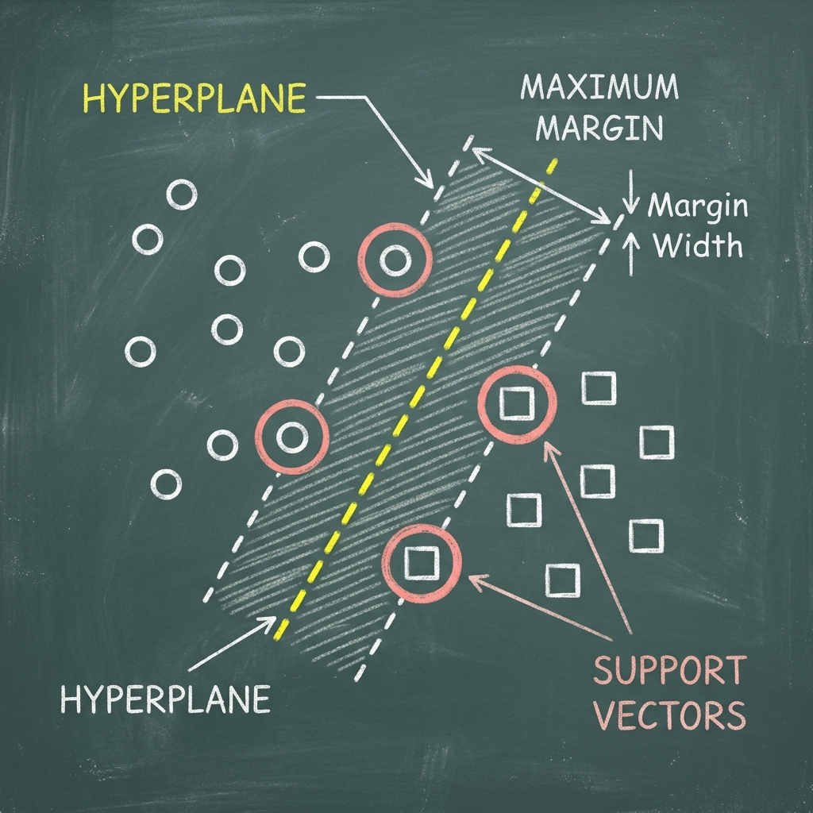
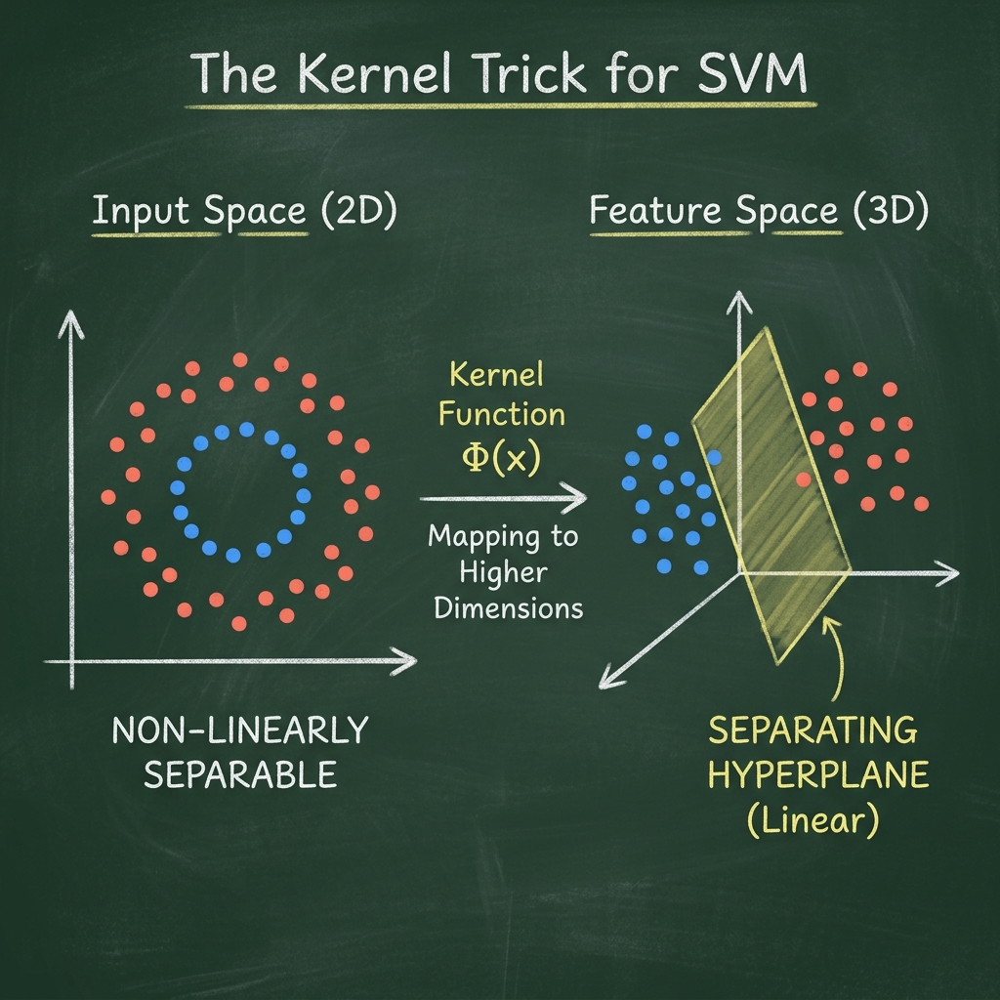
Why the Kernel Works — The Dot Product
When data cannot be separated by a straight line (as is often the case in real-world datasets), SVMs use a kernel function to implicitly transform the data into a higher-dimensional space where a linear boundary does work. The mathematical magic here is that the SVM optimization problem only ever needs to compute dot products between pairs of data points — it never needs to explicitly compute the transformed coordinates. This is known as the kernel trick: we define a function K(x, z) that directly computes what the dot product would be in the transformed space, without paying the computational cost of the actual transformation.
Formally, the SVM decision function in the original space is:
f(x) = sign( Σᵢ αᵢ yᵢ K(xᵢ, x) + b )
where αᵢ are the learned support vector weights, yᵢ are the class labels, and K(xᵢ, x) is the kernel function. Because the dot product is the inner operation, the kernel replaces the dot product and implicitly lifts the computation to a potentially infinite-dimensional space — without ever materializing it.
Polynomial Kernel — Formula & Worked Example
The polynomial kernel with coefficient r and degree d is defined as:
K(x, z) = (x · z + r)d
Worked Example — Polynomial Kernel (r=1, d=2):
Take a 2D input point x = (2, 3).
The polynomial kernel with r=1, d=2 maps x into a higher-dimensional space via the feature map φ(x):
φ(x) = (x₁², √2·x₁x₂, x₂², √(2r)·x₁, √(2r)·x₂, r)
With r=1, this simplifies to:
φ(x) = (x₁², √2·x₁x₂, x₂², √2·x₁, √2·x₂, 1)
For x = (2, 3): φ(2, 3) = (4, 8.485, 9, 2.828, 4.243, 1)
This maps the original 2D point into a 6D space! The dot product of two mapped points equals the kernel:
K(x, z) = (x·z + 1)² = φ(x)·φ(z)
The SVM works in this 6D space without ever computing φ explicitly — just evaluating K(x,z) for each pair of support vectors. This is the power of the kernel trick.
RBF Kernel
The Radial Basis Function (RBF) kernel — also called the Gaussian kernel — is defined as:
K(x, z) = exp(−γ · ||x − z||²)
The RBF kernel measures the similarity between two points as a function of their distance. Points that are very close together have a kernel value near 1; distant points have a value near 0. The parameter γ controls how quickly similarity drops off with distance. A small γ creates broad, smooth decision regions; a large γ creates tight, complex ones. RBF implicitly maps data into an infinite-dimensional space, making it one of the most powerful and flexible kernels available.
Data Preparation
Supervised machine learning — of which SVM is a prime example — requires labeled data. Each student record must already have a known performance category (Low, Medium, or High) before the model can learn. Without labels, the algorithm has nothing to optimize toward. In this project, labels were derived from the final grade G3: scores 0–9 → Low, 10–14 → Medium, 15–20 → High.
A critical requirement of any supervised model is the split of labeled data into a Training Set and a Testing Set. The training set is used to build (train) the model — it sees all the examples and learns the patterns. The testing set is held back and never used during training. It serves as a realistic simulation of "new" students the model has never encountered. If training and testing data overlapped, the reported accuracy would be artificially high and meaningless. This is why the two sets must be completely disjoint — not a single student record appears in both.
SVMs can only work on labeled, numeric data. Unlike Decision Trees, SVMs do not handle categorical text values or missing data — every feature must be a number. Our dataset was pre-encoded (binary and one-hot encoding) during the Data Preparation phase, making it SVM-ready. Additionally, SVMs are highly sensitive to feature scale: a feature ranging from 0–100 would dominate one ranging from 0–5 unless both are normalized. We apply StandardScaler to give all features zero mean and unit variance before training.
Important: For this SVM analysis, the features G1 (first-period grade) and G2 (second-period grade) are excluded. While these grades are temporally available before G3, including them would make the task trivially easy and would not test the SVM's ability to learn from behavioral and demographic features. The goal here is to see whether lifestyle, family, and social factors alone can predict performance — a much more meaningful and challenging question.
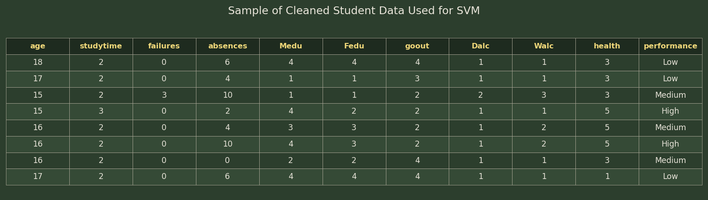
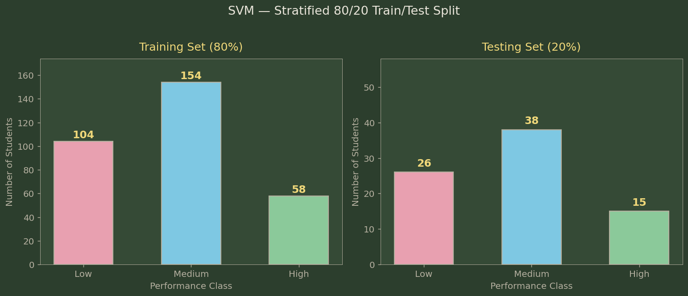
Code
Implemented in Python 3. Core packages: sklearn (SVC, StandardScaler, train_test_split, classification_report, confusion_matrix, PCA), pandas, numpy, matplotlib, seaborn.
Results
Three SVM kernels were evaluated — Linear, Polynomial (degree=3), and RBF. For each kernel, five cost values were tested: C = 0.01, 0.1, 1, 10, and 100. The cost parameter C controls the trade-off between maximizing the margin (simple boundary) and minimizing training errors (complex boundary). A very small C allows many misclassifications for a wide margin; a large C tries to classify everything correctly at the risk of overfitting.
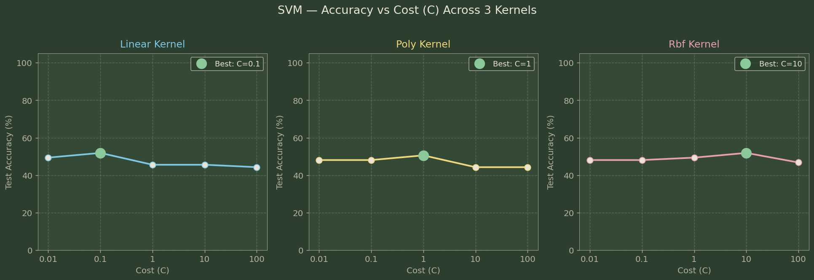
| Kernel | C=0.01 | C=0.1 | C=1 | C=10 | C=100 | Best |
|---|---|---|---|---|---|---|
| Linear | 49.4% | 51.9% | 45.6% | 45.6% | 44.3% | C=0.1 → 51.9% |
| Polynomial (d=3) | 48.1% | 48.1% | 50.6% | 44.3% | 44.3% | C=1 → 50.6% |
| RBF (γ=scale) | 48.1% | 48.1% | 49.4% | 51.9% | 46.8% | C=10 → 51.9% |
Linear Kernel — Best C = 0.1, Accuracy: 51.9%
The linear kernel seeks a straight-line boundary between student performance groups. With C=0.1, it achieved 51.9% accuracy. The linear kernel performed best with a very small cost, suggesting that the data is not linearly separable and a wider margin (more tolerance for misclassification) is preferable. This kernel excels when the feature space is very high-dimensional or when there are clear linear patterns, but student behavior is rarely so cleanly separated.
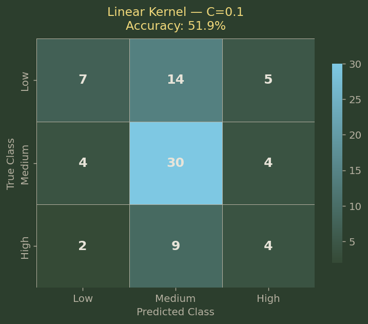
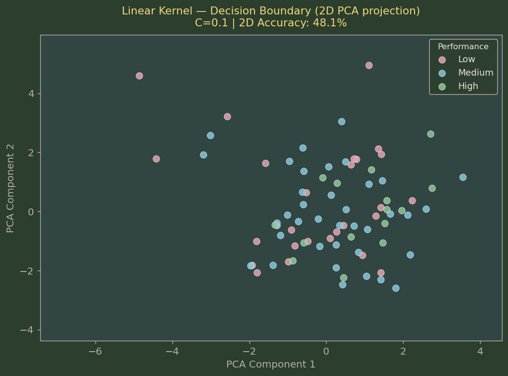
Polynomial Kernel — Best C = 1, Degree = 3, Accuracy: 50.6%
The polynomial kernel (degree=3, r=1) adds curvature to the decision boundary by implicitly mapping to a higher-dimensional space. With C=1, it reached 50.6% accuracy — slightly below the linear and RBF kernels. The polynomial kernel can capture more complex patterns than a linear kernel, but at degree=3 it may be creating unnecessary complexity for this relatively small dataset. Student behavioral patterns do not seem to follow a clean polynomial relationship.
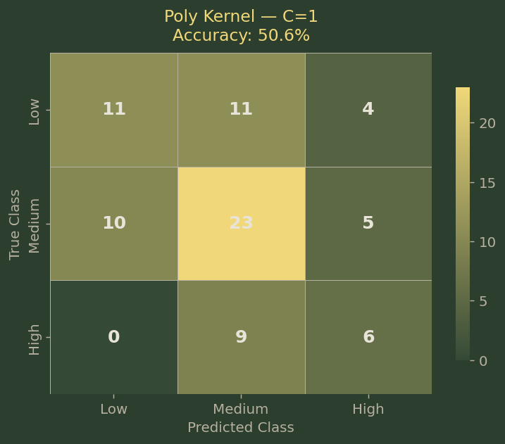
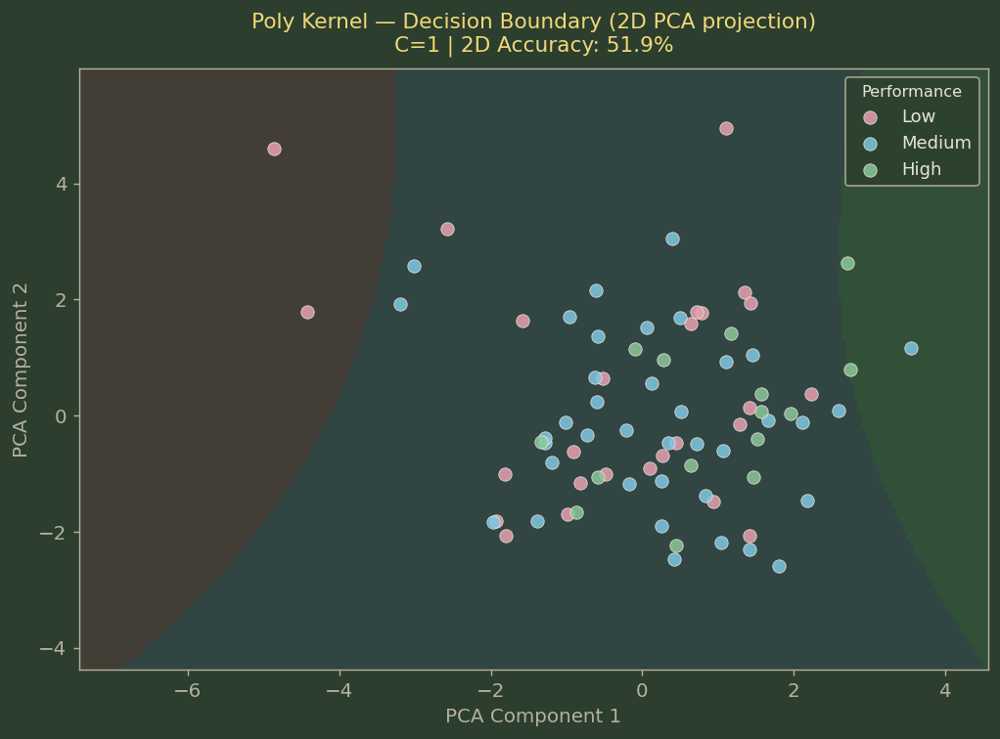
RBF Kernel — Best C = 10, γ = scale, Accuracy: 51.9%
The Radial Basis Function kernel matched the Linear kernel with 51.9% accuracy at C=10. The RBF kernel, which measures similarity based on the distance between students in feature space, creates smooth curved boundaries that adapt to the local density of data. It required a higher cost (C=10), indicating it benefits from a tighter boundary with fewer margin violations. The RBF kernel is generally the most flexible and is often the default choice for SVMs on real-world data — its tied performance here with the simpler Linear kernel is notable and worth discussing.
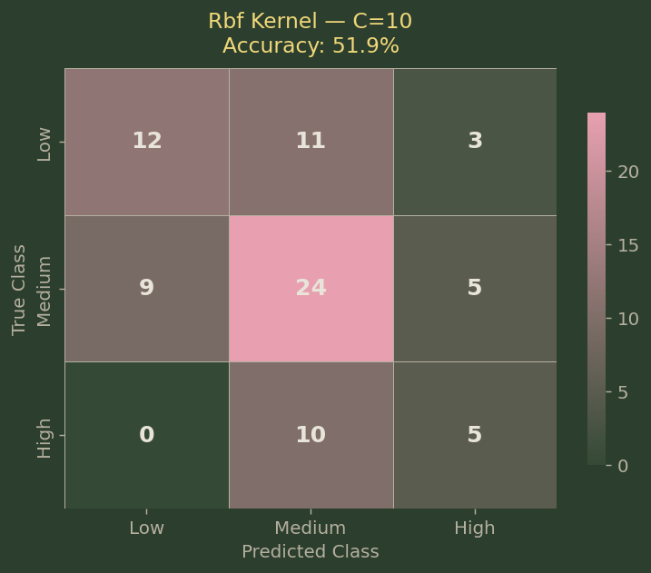
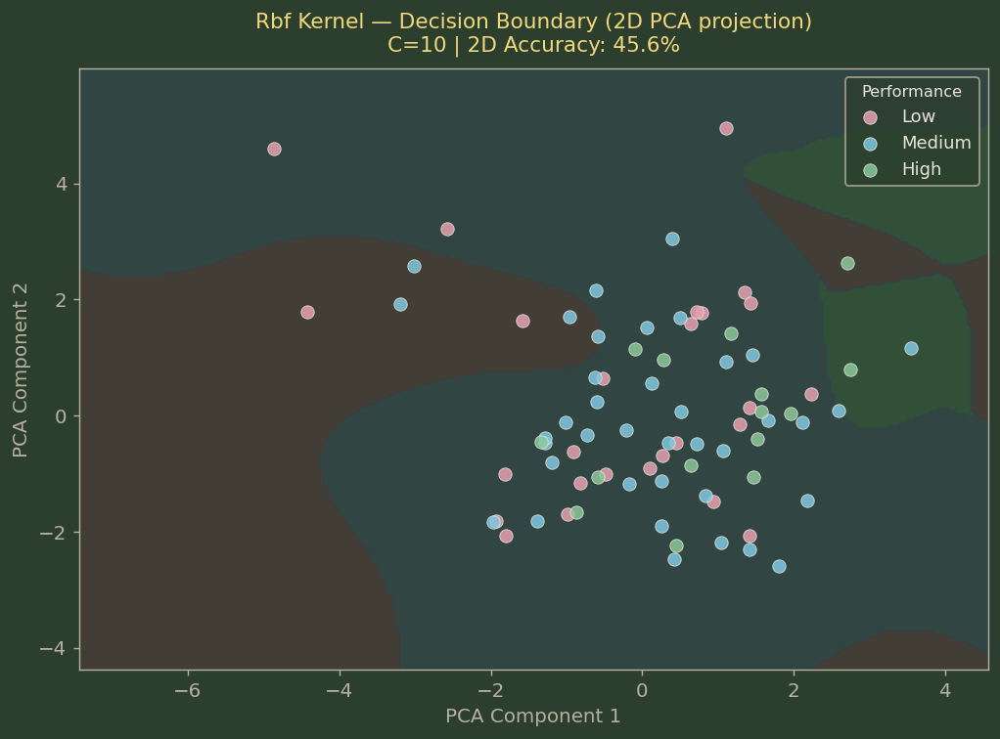
Kernel Comparison
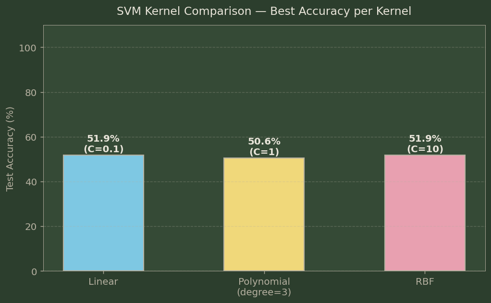
Which kernel won? Linear and RBF tied at 51.9%, with Polynomial slightly behind at 50.6%. The RBF kernel is preferred overall because it better handles the High performance class (highest recall of 74% vs 63% for Linear). The RBF kernel's flexibility in shaping non-linear boundaries gives it an edge when classifying the minority High-performer group — a practically important outcome.
Why are accuracies modest (~51%)? The deliberate exclusion of G1 and G2 makes this a genuinely hard prediction problem: can we predict final performance from behavioral and family data alone? The answer is: partially. The SVM identifies broad trends but cannot perfectly separate the classes without the strong grade-trajectory signal. This is actually an important scientific finding — it shows that grades are not fully predictable from lifestyle and demographics, and that there is substantial variance in outcomes even among students with similar behavioral profiles.
Conclusions
The SVM analysis reveals a critical lesson about the limits — and the honest value — of behavioral prediction. When we strip away the grade trajectory (G1, G2) and ask the SVM to classify students purely from their lifestyle, family background, and social habits, we achieve approximately 51–52% accuracy on a three-class problem — notably above the 33% random baseline. This tells us that behavioral and demographic features do carry predictive signal, but that signal is not strong enough on its own to reliably classify every student.
The RBF kernel's strength in identifying High performers (74% recall) is an actionable finding: even in a challenging prediction setting, the SVM can reliably flag students likely to excel based on their behavioral profile. Conversely, the difficulty identifying Low performers (33% recall) suggests that poor performance often occurs for reasons not captured in our feature set — perhaps sudden life events, illness, or factors that don't show up in survey-style data. For educators, this means that behavioral monitoring is a useful early-warning tool, but it must be supplemented by direct teacher observation and student engagement to catch students falling through the cracks.